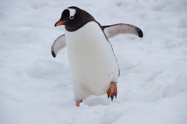

Penguins are fascinating creatures that captivate people around the world with their charming waddle and distinctive tuxedo-like appearance. These flightless birds are uniquely adapted to life in the cold and harsh environments of the Southern Hemisphere. From the towering Emperor penguins to the nimble Adélie penguins, there is a remarkable diversity among the 18 different penguin species. Discover their remarkable behaviors, habitat preferences, and the challenges they face in a changing world. Join us on an exploration of the enchanting world of penguins, and learn more about these resilient and endearing birds.
What Makes Penguins Special?
What makes penguins truly special is their remarkable adaptation to life in two worlds: land and sea. These birds have evolved to thrive in some of the harshest and most frigid environments on Earth. They are exceptional swimmers, equipped with streamlined bodies and flipper-like wings that allow them to navigate effortlessly through the water. On land, their distinctive tuxedo-like plumage provides camouflage and insulation against the cold. Penguins also exhibit fascinating social behaviors, forming tight-knit colonies and working together to raise their chicks. Moreover, their unique lack of flight sets them apart from most other bird species. Explore the extraordinary qualities that make penguins one of the most beloved and iconic creatures in the animal kingdom.
How Can You Support Penguins?
Protecting penguins and their fragile habitats is a cause that many are passionate about. There are several ways you can make a positive impact on these charismatic birds. Consider supporting conservation organizations that work to safeguard penguin populations and their environments. You can also reduce your carbon footprint to combat climate change, which directly affects penguins through melting ice and altered food sources. Additionally, practicing responsible tourism in penguin habitats, such as maintaining a respectful distance and adhering to local regulations, ensures minimal disruption to these birds. By educating yourself and others about penguins and their conservation needs, you can be a part of the global effort to ensure a brighter future for these remarkable creatures.